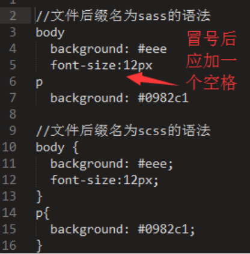

Sass
你可以用它开发网页样式，但是没法用它编程。也就是说，CSS基本上是设计师的工具，不是程序员的工具。在程序员眼里，CSS是一件很麻烦的东西。它没有变量，也没有条件语句，只是一行行单纯的描述，写起来相当费事。
SASS 的出现，让 CSS 实现了通过代码编程的方式来实现。
使用sass，可以生成风格良好的 CSS 样式表文件，易于组织和维护。
因为写的sass代码浏览器是不识别的，所以写完sass以后需要使用工具把sass代码转为css代码！
这个工具 就是node-sass，这个工具是基于nodejs的，所以需要先安装nodejs，nodejs就是那个让js 可以写后端的框架！
编译工具的安装
1-安装nodejs ，找到nodejs的安装包，疯狂 下一步和确定，安装即可！
2-安装node-sass ，打开控制台输入命令 npm install node-sass -g
等待一会，就会安装成功！
3-如果安装成功忽略此步骤，如果没有安装成功，可能是因为网络防火墙的原因，因为我们刚才使用npm安装了node-sass，而npm的服务器是在国外！怎么办呢，我们修改一下npm服务器的地址，先安装nrm，输入命令 npm install nrm -g，然后输入 nrm ls，查看当前npm的服务器地址，可以使用nrm use cnpm这个命令把地址改为中国境内的服务器！
sass文件
sass有两种后缀名文件：一种后缀名为sass，不使用大括号和分号；另一种就是我们这里使用的scss文件，这种和我们平时写的css文件格式差不多，使用大括号和分号。

使用node-sass工具把scss文件编译为css文件
监听一个文件，如果scss文件中有变化，就会生成对应的css文件
node-sass --watch <源文件> <目标文件>
node-sass --watch index.scss index.css
命令执行的时候，光标应该是一直在闪烁着，按ctrl+c可以终止
监听文件夹下所有文件，如果源文件夹中的代码有变化，立刻生成对象的css文件编译到目标文件夹中
node-sass -w -r <源文件夹> -o <目标文件夹>
node-sass -w -r scss -o css
也可以使用 node-sass -w -r scss -o css --output-style compressed，控制编译之后的css代码风格
输出css风格，可选四个值 nested | expanded | compact | compressed
1.嵌套输出 nested:
2.展开输出 expanded
3.紧凑输出 compact
4.压缩输出 compressed
sass语法
1. 变量
sass让人们受益的一个重要特性就是它为css引入了变量。你可以把反复使用的css属性值 定义成变量，然后通过变量名来引用它们，而无需重复书写这一属性值
sass使用$符号来标识变量
$nav-color: #F90;
nav {
$width: 100px;
width: $width;
color: $nav-color;
}
//编译后
nav {
width: 100px;
color: #F90;
}
$highlight-color: #F90;
.selected {
border: 1px solid $highlight-color;
}
//编译后
.selected {
border: 1px solid #F90;
}
多值变量：多值变量分为list类型和map类型，list有点像js对象中的数组，map类型像js中的对象
list : 可通过空格，逗号或小括号分割多个值，使用 nth($变量名, $索引)取值。
//一维数据
$px: 5px 10px 20px 30px;
//二维数据，相当于js中的二维数组
$px: 5px 10px, 20px 30px;
$px: (5px 10px) (20px 30px);
// 例子
$px: 10px 20px;
div {
margin:nth($px, 1) 0 0 nth($px, 2); /* margin:10px 0 0 20px; */
}
map: 数据以key和value组成，格式：$map: (key1: value1, key2: value2);
$headings: (h1: 2em, h2: 1.5em, h3: 1.2em);
@each $header, $size in $headings {
#{$header} {
font-size: $size;
}
}
2. 嵌套
css中重复写选择器是非常恶心人的。如果要写一大串指向页面中同一块的样式时，往往需要 一遍又一遍地写同一个ID：
#content article h1 { color: #333 }
#content article p { margin-bottom: 1.4em }
#content aside { background-color: #EEE }
像这种情况，sass可以让你只写一遍，且使样式可读性更高
#content {
article {
h1 { color: #333 }
p { margin-bottom: 1.4em }
}
aside { background-color: #EEE }
}
/* 编译后 */
#content article h1 { color: #333 }
#content article p { margin-bottom: 1.4em }
#content aside { background-color: #EEE }
父选择器的标识符&
大多数情况下这种简单的嵌套都没问题，但是有些场景下不行，比如你想要在嵌套的选择器 里边立刻应用一个类似于：hover的伪类。为了解决这种以及其他情况，sass提供了一个特殊结 构&。
article a {
color: blue;
&:hover { color: red }
}
article a { color: blue }
article a:hover { color: red }
群组选择器的嵌 套
.container h1, .container h2, .container h3 { margin-bottom: .8em }
.container {
h1, h2, h3 {margin-bottom: .8em}
}
子组合选择器>选择一个元素的直接子元素
article > section { border: 1px solid #ccc }
在sass中，除了CSS选择器，属性也可以进行嵌套
反复写border-styleborder-widthborder-color以及border-*等也是非常烦人的
nav {
border: {
style: solid;
width: 1px;
color: #ccc;
}
}
//
nav {
border-style: solid;
border-width: 1px;
border-color: #ccc;
}
3.导入@import
css有一个特别不常用的特性，即@import规则，它允许在一个css文件中导入其他css文件。然而，后果是只有执行到@import时，浏览器才会去下载其他css文件，这导致页面加载起来特别慢。
sass也有一个@import规则，但不同的是，sass的@import规则在生成css文件时就把相关文件导入进来。这意味着所有相关的样式被归纳到了同一个css文件中，而无需发起额外的下载请求

sass的@import规则在生成css文件时会把相关文件导入进来
reset.scss 文件
*{
margin: 0;
padding: 0;
}
index.scss文件
@import 'reset';
.box {
color: red;
font-size: 16px; }
最终在index.css文件中会出现以下代码
* {
margin: 0;
padding: 0; }
.box {
color: red;
font-size: 16px; }
使用SASS部分文件
当通过@import把sass样式分散到多个文件时，你通常只想生成少数几个css文件。那些专门为@import命令而编写的sass文件，并不需要生成对应的独立css文件，这样的sass文件称为局部文件。对此，sass有一个特殊的约定来命名这些文件。
此约定即，sass局部文件的文件名以下划线开头。这样，sass就不会在编译时单独编译这个文件输出css，而只把这个文件用作导入。当你@import一个局部文件时，还可以不写文件的全名，即省略文件名开头的下划线。举例来说，你想导入themes/_night-sky.scss这个局部文件里的变量，你只需在样式表中写@import"themes/night-sky”;。
嵌套导入
有一个名为_blue-theme.scss的局部文件
aside {
background: blue;
color: white;
}
然后把它导入到一个CSS规则内，如下所示
.blue-theme {@import "blue-theme"}
//生成的结果跟你直接在.blue-theme选择器内写_blue-theme.scss文件的内容完全一样。
.blue-theme {
aside {
background: blue;
color: #fff;
}
}
被导入的局部文件中定义的所有变量和混合器，也会在这个规则范围内生效。这些变量和混合器不会全局有效
静默注释
静默注释的语法跟JavaScriptJava等类C的语言中单行注释的语法相同，它们以//开头，注释内容直到行末。
body {
color: #333; // 这种注释内容不会出现在生成的css文件中
padding: 0; /* 这种注释内容会出现在生成的css文件中，压缩则删除 */
}
4.混合器
如果你的整个网站中有几处小小的样式类似（例如一致的颜色和字体），那么使用变量来统一处理这种情况是非常不错的选择。但是当你的样式变得越来越复杂，你需要大段大段的重用样式的代码，独立的变量就没办法应付这种情况了。你可以通过sass的混合器实现大段样式的重用
混合器使用@mixin标识符定义
下边的这段sass代码，定义了一个混合器，目的是添加跨浏览器的圆角边框。
@mixin rounded-corners {
-moz-border-radius: 5px;
-webkit-border-radius: 5px;
border-radius: 5px;
}
然后就可以在你的样式表中通过@include来使用这个混合器，放在你希望的任何地方。@include调用会把混合器中的所有样式提取出来放在@include被调用的地方。如果像下边这样写：
notice {
background-color: green;
border: 2px solid #00aa00;
@include rounded-corners;
}
//sass最终生成：
.notice {
background-color: green;
border: 2px solid #00aa00;
-moz-border-radius: 5px;
-webkit-border-radius: 5px;
border-radius: 5px;
}
给混合器传参
@mixin link-colors($normal, $hover, $visited) {
color: $normal;
&:hover { color: $hover; }
&:visited { color: $visited; }
}
当混合器被@include时，你可以把它当作一个css函数来传参。如果你像下边这样写：
a {
@include link-colors(blue, red, green);
}
//Sass最终生成的是：
a { color: blue; }
a:hover { color: red; }
a:visited { color: green; }
你@include混合器时，有时候可能会很难区分每个参数是什么意思，参数之间是一个什么样的顺序。为了解决这个问题，sass允许通过语法$name: value的形式指定每个参数的值。这种形式的传参，参数顺序就不必再在乎了，只需要保证没有漏掉参数即可
a {
@include link-colors(
$normal: blue,
$visited: green,
$hover: red
);
}
默认参数值
@mixin link-colors(
$normal,
$hover: $normal,
$visited: $normal
)
{
color: $normal;
&:hover { color: $hover; }
&:visited { color: $visited; }
}
如果像下边这样调用：@include link-colors(red) $hover和$visited也会被自动赋值为red。
5-if
@if 语句后面可以跟多个@else if语句和一个 @else 语句。
如果@if语句失败，Sass 将逐条尝试@else if 语句，直到有一个成功，或如果全部失败，那么会执行@else语句
$type: monster;
p {
@if $type == ocean {
color: blue;
} @else if $type == matador {
color: red;
} @else if $type == monster {
color: green;
} @else {
color: black;
}
}
6-循环
@for语句将设置$var为指定的范围内每个连续的数值，并且每一次输出的嵌套样式中使用$var的值。对于from ... through的形式，范围包括<start>和<end>的值，但from ... to的形式从<start>开始运行，但不包括<end>的值。使用through语法，
@for $i from 1 through 3 {
.item-#{$i} { width: 2em * $i; }
}
.item-1 {
width: 2em; }
.item-2 {
width: 4em; }
.item-3 {
width: 6em; }
@each循环：语法为@each $var in <list or map>。 其中$var表示变量
遍历list
//sass 样式
$animal-list: puma, sea-slug, egret;
@each $animal in $animal-list {
.#{$animal}-icon {
background-image: url('/images/#{$animal}.png');
}
}
//css 编译后样式
.puma-icon {
background-image: url('/images/puma.png');
}
.sea-slug-icon {
background-image: url('/images/sea-slug.png');
}
.egret-icon {
background-image: url('/images/egret.png');
}
遍历map
//sass 样式
$headings: (h1: 2em, h2: 1.5em, h3: 1.2em);
@each $header, $size in $headings {
#{$header} {
font-size: $size;
}
}
//css 编译后样式
h1 {
font-size: 2em;
}
h2 {
font-size: 1.5em;
}
h3 {
font-size: 1.2em;
}
7、继承
使用sass的时候，最后一个减少重复的主要特性就是选择器继承。基于面向对象的的理念，选择器继承是说一个选择器可以继承为另一个选择器定义的所有样式。这个通过@extend语法实现，如下代码:
//通过选择器继承继承样式
.error {
border: 1px solid red;
background-color: #fdd;
}
.seriousError {
@extend .error;
border-width: 3px;
}
//编译后
.error,.seriousError {
border: 1px red;
background-color: #fdd;
}
.seriousError {
border-width: 3px;
}
在上边的代码中，.seriousError将会继承样式表中任何位置处为.error定义的所有样式。以class="seriousError" 修饰的html元素最终的展示效果就好像是class="seriousError error"。相关元素不仅会拥有一个3px宽的边框，而且这个边框将变成红色的，这个元素同时还会有一个浅红色的背景，因为这些都是在.error里边定义的样式。
%占位符，
从sass3.2.0后，就可以定义占位选择器%，这个的优势在于，不调用不会有多余的css文件
// sass样式
%h1 {
font-size:20px;
}
div {
@extend %h1;
color:red;
}
// css编译后样式
div {
font-size:20px;
color:red;
}
占位符配合继承使用
%clearfix {
*zoom: 1;
&:before, &:after {
content: " ";
display: table;
}
&:after {
clear: both;
}
}
使用
.container-with-floated-children {
@extend %clearfix;
}
函数 function
sass允许用户编写自己的函数，以@function开始
$fontSize: 10px;
@function pxTorem($px) {
@return $px / $fontSize * 1rem;
}
div {
font-size: pxTorem(16px);
}
// css编译后样式
div {
font-size: 1.6rem;
}
sass 的一些 封装
这个mixin可以可以制作出兼容 Internet Explorer 5 的跨浏览器透明度效果。
@mixin opacity($opacity) {
opacity: $opacity;
$opacity-ie: $opacity * 100;
filter: alpha(opacity=$opacity-ie); //IE8
}
//使用
.faded-text {
@include opacity(0.8);
}
%clearfix {
*zoom: 1;
&:before, &:after {
content: " ";
display: table;
}
&:after {
clear: both;
}
}
使用
.container-with-floated-children {
@extend %clearfix;
}